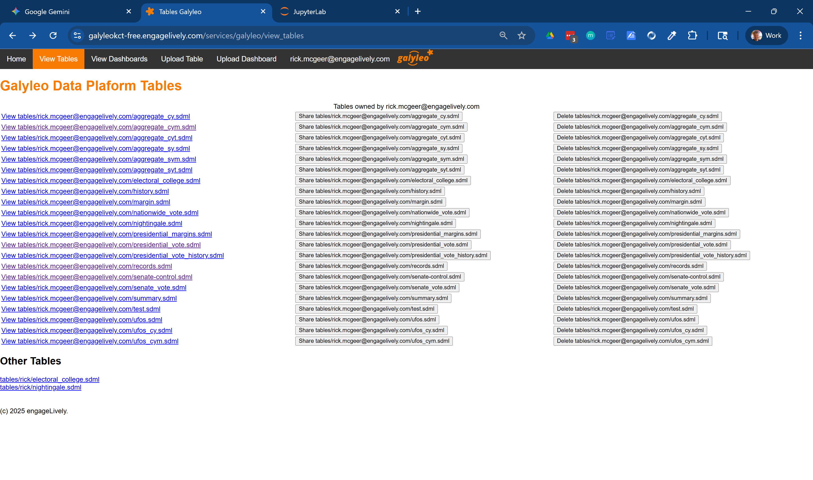
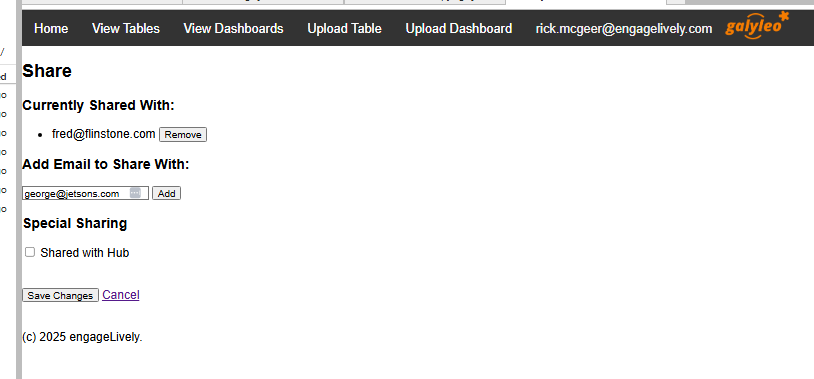
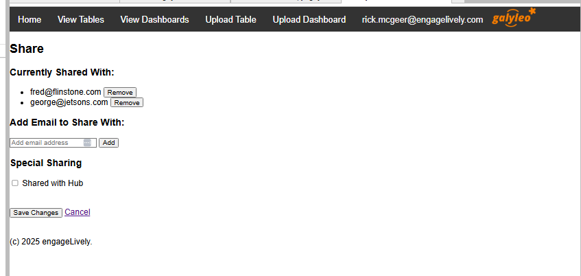
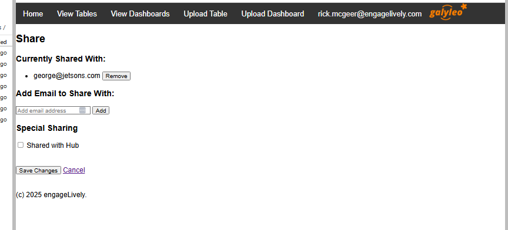

How Items are Accessed, Shared, and Published
This section describes how items (dashboards and tables) are accessed, published, and shared on the Galyleo service.
Item URL
Every item stored on the Galyleo Service has an URL: <hub-url>/services/galyleo/<item-kind>/<owner>/<item-name>, where:
- hub-url is the URL of the Hub (e.g., https://galyleo-beta.engagelively.com)
- item-kind is the type of the item (either 'table' or 'dashboard')
- owner is the Hub userid of the owner. For almost all deployments, this will be an email address.
- item-name is the name of the item, e.g., for the table nightingale.sdml, the name is nightingale.sdml. All dashboard names end in .gd.json and all table names end in .sdml.
Accessing Items
Users can access items that they own or that have been shared with them, either directly by name or as part of a group with which the item is shared. The two existing groups are HUB (all users of the Hub) and PUBLIC (everyone). On the WebUI, items which are accessible but not owned by the user are available at the bottom of the appropriate page, under "Other Dashboards" and "Other Tables".

Sharing Items
By default, when an item is uploaded to the service either through the manual upload or through the API methods publish and publish_data, the item is private to the item's owner. It can be explicitly shared with other users either through the Web UI or through an API call.
Sharing Through the Web UI
Clicking the "Share" Button beside an item brings up a share screen:

Entering a user's email and hitting "Add" shares the table with that user.

Clicking the "Remove" button beside a user's name stops sharing the table with that user.

"Save Changes" updates the share list; clicking "Cancel" leaves the share list unchanged.
Sharing Through the API
An item is shared in the API at the time it is published, either through the publish method for dashboards or the publish_data method for tables. An optional parameter to the body payload, share_list, is the list of users with whom the item should be shared. Consider the example:
with open 'nighingale.sdml' as f:
table = json.load(f)
body = {
'name': 'nightingale.sdml',
'table': table,
'share-list': ['foo@bar.com', 'fred@fake-domain.com']
}
url = 'https://galyleo-beta.engagelively.com/services/galyleo/publish_data'
headers = {'Authorization': f'token {os.environ["JUPYTERHUB_API_TOKEN"]}'}
response = requests.post(url, headers=headers, json=body)
This will publish the nightingale.sdml table and share it with users foo@bar.com, fred@fake-domain.com.
A Note on Sharing
Sharing a document such as a table or dashboard does not automatically share embedded content. So if a dashboard references the table nightingale.sdml, the table must be separately shared with everyone who has access to the dashboard.
The HUB User
The HUB user is a distinguished user which corresponds to all users of the Hub. Sharing with the HUB is the way that items are published to all Hub users.